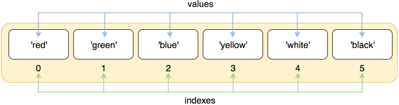
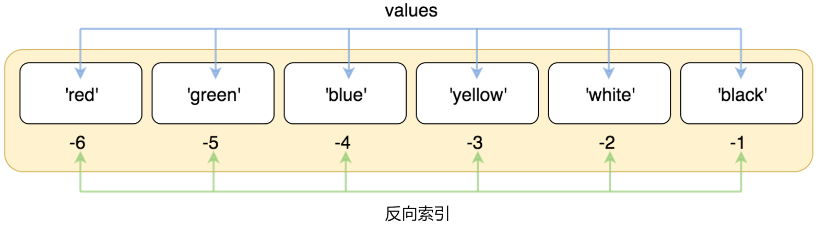

REF
紀錄學習 Udemy-Python-100days of code
Day 4 - Begineer - Randomisation and Python Lists
Module
定義：module 是包含 function, variable, class 等程式碼的文件, 用於方便重複使用程式碼
作用：將程式碼分成模組有助於維護、理解，且方便多人協作
簡單說就是, module 中有各種開發完成的功能, user 可以在不用自行開發的情況下直接使用
使用的 syntax：
使用前需要先 import
Custom Modules：可以建立自己的模組, 將其儲存為 .py 文件，然後在其他文件中使用 import 導入。例如：
file：my_module.py
1
2
|
import my_module
print(my_module.my_favorite_number)
|
Random() Module
random — Generate pseudo-random numbers
randint()
菜鳥教程-random.randint()
返回指定範圍內的整數(包含頭尾)。
random.randint() 語法：
random.randint(start, stop)
1
2
|
random_integer = random.randint(1, 10) # 產生 1~10 隨機數字
print(random_integer)
|
random()
菜鳥教程-random.random()
返回隨機生成的一個實數, 它在半開放區間 [0,1) 範圍內(包含0，不含1).
random.random() 语法:
random.random()
1
2
|
random_float = random.random()
print(random_float)
|
透過乘上倍數, 可以產生指定範圍的浮點數
生成 [ 0 , 5 ) 、 [ 0 , 10 ) 之間的隨機浮點數
1
2
3
|
random_float = random.random()
print(random_float * 5 )
print(random_float * 10 )
|
菜鳥教程-random.uniform()
隨機產生下一個浮點數, 它在 [x,y] 範圍內 (包含 x, y)
random.uniform() 语法:
random.uniform(x, y)
1
2
|
random_float = random.uniform(0, 10)
print(random_float)
|
choice()
菜鳥教程-python3-random.sampl
返回一個列表，元組或字符串的隨機項。
random.choice() 语法:
random.choice(seq)
參數
返回值
返回隨機項
1
2
3
4
5
|
import random
print ("從 range(100) 返回一個隨機數 : ", random.choice(range(100)))
print ("從列表中 [1, 2, 3, 5, 9]) 返回一個隨機元素 : ", random.choice([1, 2, 3, 5, 9]))
print ("從字符串中 'Runoob' 返回一個隨機字元 : ", random.choice('Runoob'))
|
List
list 裡面存任何 data 都可以 但是頭尾一定是中括號 [], 中間 data 用 , 隔開
sequence 中的每個 element 都分配一個數字 - 它的 position, 或 index，第一個 index 是 0, 第二個 index 是 1, 依此類推
Create List
syntax： <list_name> = [item1, item2]
1
2
3
4
|
list1 = ['Google', 'Runoob', 1997, 2000]
list2 = [1, 2, 3, 4, 5 ]
list3 = ["a", "b", "c", "d"]
list4 = ['red', 'green', 'blue', 'yellow', 'white', 'black']
|
Index
正向索引

1
2
3
4
5
|
list = ['red', 'green', 'blue', 'yellow', 'white', 'black']
print(list[0])
# red
print(list[1])
# green
|
反向索引

1
2
3
4
5
|
list = ['red', 'green', 'blue', 'yellow', 'white', 'black']
print( list[-1] )
# black
print( list[-2] )
# white
|
Modify List
Change element
透過索引更新值
1
2
3
4
5
6
|
list = ['Google', 'Runoob', 1997, 2000]
print ("第三個元素為 : ", list[2])
# 1997
list[2] = 2001
print ("更新後的第三個元素為 : ", list[2])
# 2001
|
append()
菜鳥教程-Python3 List append()
用於在 llist 末尾添加新的 element
append()語法：
list.append(obj)
參數
返回值
無返回值, 但是會修改原來的列表
1
2
3
4
5
|
list1 = ['Google', 'Runoob', 'Taobao']
list1.append('Baidu')
print ("更新后的列表 : ", list1)
# ['Google', 'Runoob', 'Taobao', 'Baidu']
|
extend()
新增列表的值(使用列表擴展)
菜鳥教程-Python3 List exetend()
用於在列表末尾一次性追加另一個序列中的多個值(用新列表擴展原來的列表)
語法
extend()語法：
list.append(seq)
參數
- seq – 元素列表, 可以是列表, 元組, 集合, 字典, 若為字典, 則僅會將鍵(key)作為元素依次添加至原列表的末尾
返回值
無返回值, 但是會修改原來的列表
1
2
3
4
5
|
list1 = ['Google', 'Runoob', 'Taobao']
list2=[0, 1, 2, 3, 4] # 創建 0-4 的列表
list1.extend(list2) # 擴展列表
print ("擴展後的列表：", list1)
# ['Google', 'Runoob', 'Taobao', 0, 1, 2, 3, 4]
|
Nested List
可以在列表中嵌套多個列表, 將相關的資料分組管理
例：存放高農藥殘留的水果和蔬菜
1
2
3
4
5
|
dirty_dozen = [
["Strawberries", "Apples", "Grapes"], # 水果
["Spinach", "Kale", "Tomatoes"] # 蔬菜
]
print(dirty_dozen)
|
Index Error
當嘗試存取超出清單長度的索引時, 會拋出 IndexError
解決方法：使用 len() 檢查清單長度, 並確保索引值小於清單長度
1
2
|
num_of_states = len(states_of_america) # 50
print(states_of_america[num_of_states - 1]) # 正確索引為 49
|
HW
rock_paper_scissors
使用 random module, list 等功能, 做一個和電腦玩猜拳的遊戲
1
2
3
4
5
6
7
8
9
10
11
12
13
14
15
16
17
18
19
20
21
22
23
24
25
26
27
28
29
30
31
32
33
34
35
36
37
38
39
40
41
42
43
44
45
46
47
48
49
50
51
52
53
54
55
56
57
58
|
import random
rock = '''
_______
---' ____)
(_____)
(_____)
(____)
---.__(___)
'''
paper = '''
_______
---' ____)____
______)
_______)
_______)
---.__________)
'''
scissors = '''
_______
---' ____)____
______)
__________)
(____)
---.__(___)
'''
paper_scissor_rock_list = [rock, paper, scissors]
user = int(
input("What do you choose? Type 0 for Rock, 1 for Paper or 2 for Scissors.\n"))
if user >= 3 or user < 0:
print("You typed an invalid number, you lose!")
exit()
com = random.randint(0, len(paper_scissor_rock_list)-1)
user_ch = paper_scissor_rock_list[user]
com_ch = paper_scissor_rock_list[com]
if user == com:
print(f"You choose\n{user_ch}\nComputer choose\n{com_ch}")
print("Draw!")
elif user == 0 and com == 2:
print(f"You choose\n{user_ch}\nComputer choose\n{com_ch}")
print("User win!")
elif com == 0 and user == 2:
print(f"You choose\n{user_ch}\nComputer choose\n{com_ch}")
print("Com win!")
elif user > com:
print(f"You choose\n{user_ch}\nComputer choose\n{com_ch}")
print("User Win!")
else:
print(f"You choose\n{user_ch}\nComputer choose\n{com_ch}")
print("Com Win!")
|